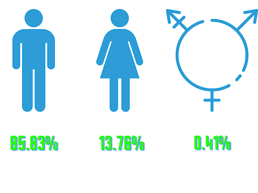
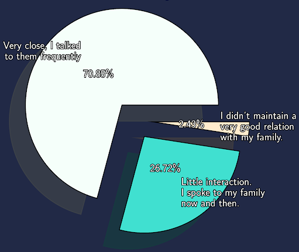
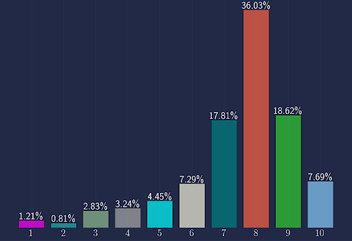
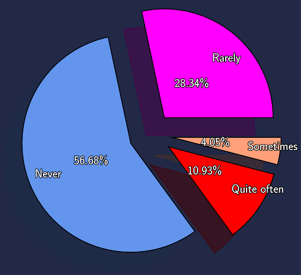
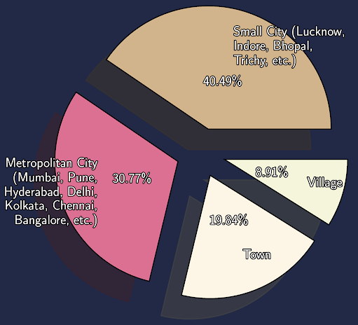
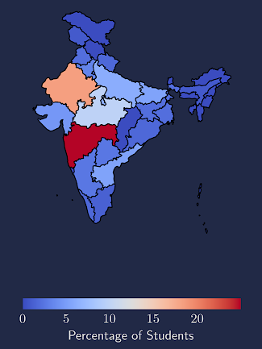
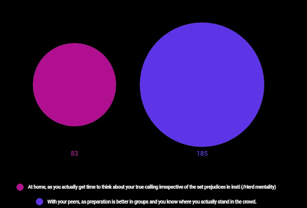
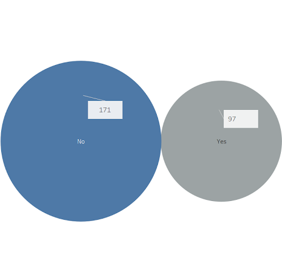
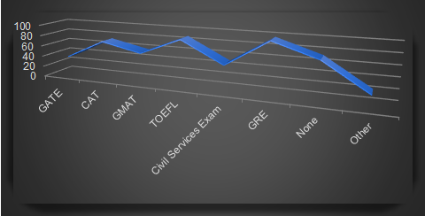

Personal
Sex Ratio
How close were you to your family while at college?
On a scale of 1-10, how satisfied are you with the quality of your life in the institute(1 being 'not at all', 10 being'very much)?
How frequently did you use dating apps during your stay at IIT?
You primaraly grew up in a:
Which region would you call your native place?
In terms of placement preparation, which of do you feel is better?
An online Placement-from-Home season was a unique experience for the graduating batch. A large tally of students felt that they could have prepared better in the confines of the institute amongst their friends and competitors. Some optimistic souls decided to use the best of the situation to make unbiased and informed decisions and get out of the herd mentality - a disease affecting students for ages.
Have you had a change of mind regarding the sector of your career after completing a major intern?
Internships are often regarded as testing waters for deciding future options. It can either reinforce your decision to continue in the field or open new ventures which you hadn’t considered before. Nearly a third of the form takers admitted getting a newer direction after a major internship while the rest could reaffirm their choices.
Have you appeared for or are you planning to appear for the following exams?
As expected, TOEFL and GRE are the frontrunners as they are a fundamental requirement for pursuing higher studies abroad. There is also an increased interest in CAT and GMAT, a path for the management and Business-oriented junta. GATE and Civil Services are the other preferred routes for people wishing to continue their studies in India.

COPYRIGHT © 2021 INSIGHT, IIT BOMBAY
Back to Top